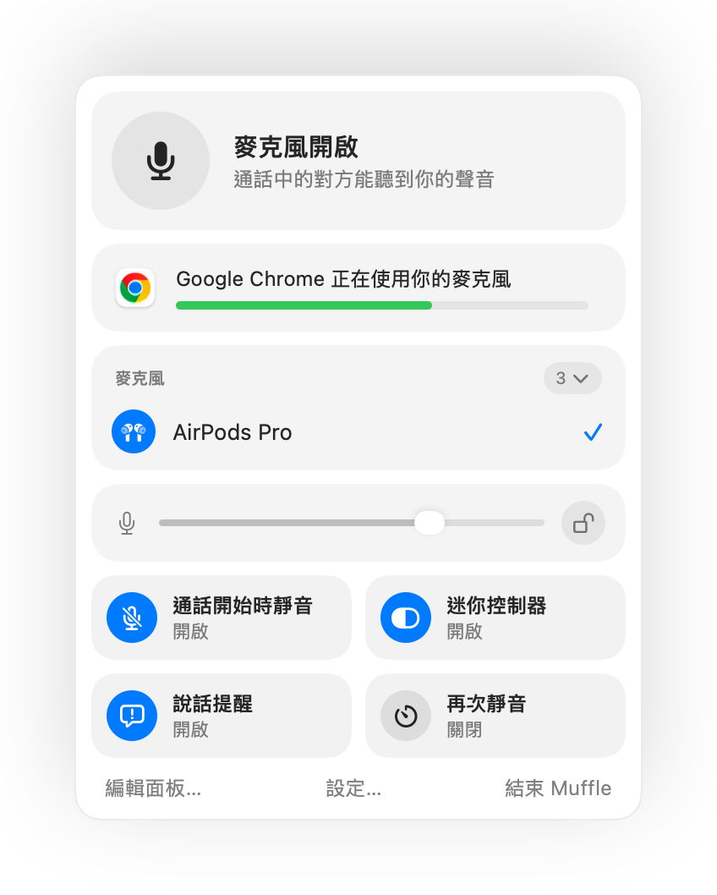

如何在 Mac 上用 AirPods 將 Google Meet 靜音
在 iPhone 上，按壓 AirPods 耳機柄即可將通話靜音。但在 Mac 上，Google Meet 通常在 Chrome 中執行，而 Chrome 不會將該按壓動作傳遞給網頁。按下去只會聽到錯誤提示音，Meet 仍會繼續傳送你的聲音。
Muffle 能為每場 Meet 會議解決這個問題。它會親自接收 AirPods 的按壓動作並將 Mac 的麥克風靜音，因此即使分頁在背景執行，Meet 也聽不到任何聲音。
免費試用 Muffle 3 天即將在 Mac App Store 推出
用 AirPods 將 Google Meet 靜音
- 安裝 Muffle，並在系統詢問時允許取用麥克風。
- 在 Chrome、Safari、Arc 或 Edge 中加入 Google Meet 視訊會議。
- 按壓一下 AirPods 耳機柄即可靜音。Muffle 圖示會變成紅色。
- 再按一次可取消靜音。你也可以在任何 App 中按下 Control-Option-M。

- Meet 可能仍會顯示麥克風為開啟狀態，因為 Muffle 是直接將麥克風靜音，而非切換 Meet 的按鈕。只要 Muffle 圖示為紅色，所有人聽到的都只會是靜音。
- 開啟「每次通話開始時都靜音」，即可在加入每場 Meet 會議時自動保持靜音。
常見問題
為什麼按壓 AirPods 無法將 Google Meet 靜音？
Chrome 不支援 macOS 針對網頁通話設計的 AirPods 靜音手勢，因此 macOS 沒有對應的 App 可以傳遞按壓動作。Muffle 正好扮演了這個角色。
只用 Meet 自帶的快速鍵不夠嗎？
Meet 的 Command-D 快速鍵只有在 Meet 分頁處於最上層時才有效。Muffle 的快速鍵和 AirPods 按壓動作則適用於任何 App。